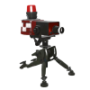
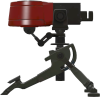
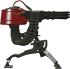
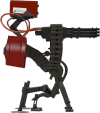

Građevine
Engineer ima 4 vrste građevina koje može da sagradi i svaki inžinjer u igri može da ima do jednu građevinu od svake vrste. Svaka od 4 vrste ima svoju cenu u metalu, ali sve vrste građevina mogu da se unaprede dva puta, sa 200 metala po nivou.

Meni za gradnju.
PDA pomoću kojeg se gradi.
Sentry Gun
Ova građevina, koja košta 130 metala, je glavno oružije inižinjera. Sentry Gun ima i najviše varijacija između nivoa, pošto se na drugom nivou značajno povećava Damage Per Second a na trećem nivou dobija rakete koje povremeno puca na trenutnu metu. Jedno alternativno oružije za inžinjera koje se zove Gunslinger menja Sentry Gun za Mini-sentry, koji košta samo 100 metala i brže se gradi, ali ne može da se unapređuje. Pomoću alternativnog oružija koje zamenjuje pištolj i zove se Wrangler može da se preuzme kontrola nad nišanjenjem ove građevine i tako brže puca i ima štit koji smanjuje 3 puta svu štetu koju primi kontrolisani Sentry Gun, ali kada inžinjer promeni aktivno oružije ili umre, još nekoliko sekundi je štit aktivan i automatsko nišanjenje isključeno.
| Nivo | Damage Per Second metaka | Health |
|---|---|---|
|  | ~50 | 100 |
|  | ~78 | 130 |
|  | ~130 | 180 |
|  | 216 |
Dispenser
Ovo je građevina koja svim prijateljskim igračima koji su pored nje dopunjava Health i municiju, ali u to ne spada metal, koji se uzima iz internog rezervoara metala koji se dopunjava svakih 5 sekundi. To znači da jedan Dispenser ne može da konstantno regeneriše metal svim inžinjerima oko sebe, već povremeno dobija metal koji uzima samo inžinjer kome se prvom dodeli. Košta 100 metala da se sagradi, ali se najduže gradi od svih.
Teleporter Enterance
Teleporter Enterance košta samo 50 metala (pre nekoliko godina je koštao čak 125!) i može da teleportuje prijateljskog igrača do izlaza istog inžinjera. Sa alternativnim oružijem Eureka Effect, sagrađeni teleporteri se unapređuju sa samo 100 metala po nivou. To znači da može da se uštedi na metalu tako što se prebaci na Eureka Effect i sagradi teleporter, pa se vrati na prethodno Melee oružije i kasnije unapredi teleporter.
Teleporter Exit
Teleporter Exit služi samo da Teleporter Enterance ima gde da pošalje igrače. Oba teleportera koštaju isto da se izgrade i oba se unapređuju istovremeno, a i ako postoji teleporter koji je već unapređen a drugi se tek posle izgradi, taj drugi se automatski dovede na nivo prvog. Kod postavljanja ove građevine je bitno da se okrene ka tamo gde treba da se ide, pošto teleporteri okrenu teleportovane igrače u smeru izlaza.